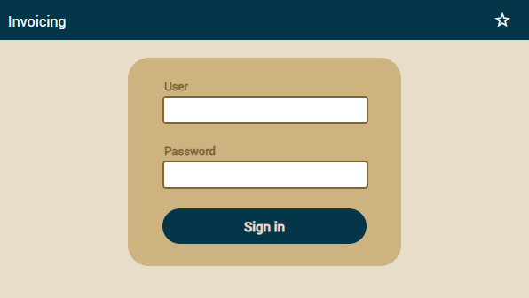

Edit the
pom.xml file in the root of your project, there add the next dependency inside the
<dependencies> part:
<dependency>
<groupId>com.mysql</groupId>
<artifactId>mysql-connector-j</artifactId>
<version>8.1.0</version>
</dependency>
Edit
src/main/webapp/META-INF/context.xml of your project to adjust the datasource to point to MySQL, something like this:
<Resource name="jdbc/invoicingDB" auth="Container"
type="javax.sql.DataSource"
maxTotal="100" maxIdle="20" maxWaitMillis="10000"
username="root" password="r123456"
driverClassName="com.mysql.cj.jdbc.Driver"
url="jdbc:mysql://localhost:3306/invoicingdb"/>
This code is already in
context.xml. Comment out the data source pointing to HSQLDB and uncomment the one for MySQL. Then, use your
URL,
username, and
password.
Finally, edit
src/main/resources/MEFA-INF/persistence.xml and add the line with the dialect
org.hibernate.dialect.MySQL8Dialect as shown below:
<persistence-unit name="default">
<provider>org.hibernate.jpa.HibernatePersistenceProvider</provider>
<non-jta-data-source>java://comp/env/jdbc/invoicingDS</non-jta-data-source>
<class>org.openxava.session.GalleryImage</class>
<class>org.openxava.web.editors.DiscussionComment</class>
<class>com.openxava.naviox.model.ConfigurationRecord</class>
<class>com.openxava.naviox.model.Folder</class>
<class>com.openxava.naviox.model.History</class>
<class>com.openxava.naviox.model.Module</class>
<class>com.openxava.naviox.model.ModuleRights</class>
<class>com.openxava.naviox.model.Organization</class>
<class>com.openxava.naviox.model.Role</class>
<class>com.openxava.naviox.model.SessionRecord</class>
<class>com.openxava.naviox.model.User</class>
<properties>
<property name="javax.persistence.schema-generation.database.action" value="update"/>
<property name="hibernate.dialect" value="org.hibernate.dialect.MySQL8Dialect" />
</properties>
</persistence-unit>
After the changes you have to rebuild your project. In OpenXava Studio click with right mouse button on your project an choose
Run As > Maven install, this:

The first part would be ready, now we must create the JPA project in Eclipse.
Create JPA Project and Connect to the Database
The Eclipse package that we installed includes
Dali and
DTP (Data Tools Platform) software. In case you haven't installed that software, you will need to do it manually.
Open the recently installed Eclipse and proceed to create a JPA project with
File > New > JPA Project.

Enter the project name, and then in
Target runtime, select any version of
Java 1.8 or later installed,
JPA version 2.2.

Select
Next twice until you see the next screen. Here, in
JPA implementation, disable library configurations by choosing
Disable Library Configuration. Then proceed to create the database connection with
Add Connection.

In the window that appears, select the database you have. In our case, it will be MySQL. You can name the connection in the
Name field.

Here is where we choose the driver for the connection. Proceed to create a new one as shown in the image.

Select
MySQL JDBC Driver 5.1, name it for identificate

Now we have to remove the default driver by selecting
mysql-connector-java-5.1.0-bin.jar and clicking
Remove JAR/Zip. Now, add the newer one that you can download
here. Remember to download the ZIP option, and once downloaded, add it with
Add Jar/Zip.

It should look something like this; click
Ok.

It will take you back to the previous window, where you now need to fill in the details. In Database, you can use any name to differentiate it from other connections. In
URL, put the database connection, and finally, fill in the database user and password. Once complete, you can test if the connection is correct with
Test Connection. Then, check
Save password and press
Finish.

Now, you will see the first window. Check the option
Override default schema from connection and select the schema of the connection. Then press
Finish. You now have the JPA project and the connection to your database created.

Pressing
Finish may prompt you to open a perspective. If not, you can view the connection in the
Data Source Explorer panel under
Windows > Show View > Data Source Explorer.

If it doesn't appear in
Show View, you will need to add it manually from
Other... by entering data source in the window that appears.

Now, in the
Data Source Explorer panel, you can see the connection to the database.

Generate Entities from Tables in Eclipse
The ultimate goal of this article is to generate entities from the tables of the database. Now that we have the connection, let's proceed with the generation. Right-click on the project and press
JPA Tools > Generate Entities from Tables...

Here, you should select the tables for which you want to generate a class/entity. Let's select all except "
images" and "
oxdiscussioncomments," which are tables generated automatically by OpenXava.

In this view, you see all the relationships between the tables it found. You can add or remove relationships as needed since these relationships will be converted into code for the generated class. Then, click
Next.

On this screen, you have various options to choose from. We'll leave everything as default and only change the
Collection properties type to
java.util.List and check the option
Always generate optional JPA annotations and DDL parameters. Below in the
Package field, you should enter it exactly as in OpenXava. In our case, it will be
com.yourcompany.invoicing.model. Now, you can press
Next.

Here, you can explore table by table and adapt each property. For example, OpenXava doesn't work with TINYINT, BLOB, GEOMETRY, among others.

When selecting a property, it allows you to change its name and type, as well as whether it is an id or not. Click
Finish and wait for all the classes to be generated.

The generated classes are located in the
src/main/java folder, inside the
com.yourcompany.invoicing.model package, as we defined above. Copy all of them and paste them into the
com.yourcompany.invoicing.model package that you must create in the OpenXava project we created at the beginning of the article.

Adapt Code for OpenXava
The auto-generated code is sufficient but not adapted to work in an OpenXava application. Let's make some modifications; some are optional. In the Author class, there is a @OneToMany relationship with Product, indicating that each author can have many products. We are interested in displaying several products related to the selected author. Add an @ListProperties() annotation with the parameters "number, description, price":
public class Author implements Serializable {
...
@OneToMany(mappedBy="author")
@ListProperties("number, description, price")
private List<Product> products;
In the
Invoice class, there are two relationships,
@ManyToOne with
Customer and
@OneToMany with
InvoiceDetail. Let's leave Customer as it is and remove the
@OneToMany annotation from
InvoiceDetail. Instead, add two annotations,
@ElementCollection and
@ListProperties("product.number, product.description, quantity")
public class Invoice implements Serializable {
...
//@OneToMany remove this annotation
@ElementCollection
@ListProperties("product.number, product.description, quantity")
private List<InvoiceDetail> invoiceDetails;
In the
InvoiceDetail class, there is no
@Id property since, in its logic, it is an embedded class. Change
@Entity to
@Embeddable and remove the relationship with
Invoice
@Embeddable
//@Entity remove this annotation
@Table(name="invoice_details")
@NamedQuery(name="InvoiceDetail.findAll", query="SELECT i FROM InvoiceDetail i")
public class InvoiceDetail implements Serializable {
private static final long serialVersionUID = 1L;
@Column(nullable=false)
private int quantity;
//bi-directional many-to-one association to Product
@ManyToOne
@JoinColumn(name="product_number")
private Product product;
//comment or remove the relationship with Invoice and its getter, setter methods
//@ManyToOne
//private Invoice invoice;
//public Invoice getInvoice() {
// return this.invoice;
//}
//public void setInvoice(Invoice invoice) {
// this.invoice = invoice;
//}
}
Finally, adapt the
Product class. We are not interested in the relationship with
InvoiceDetail, but we are interested in the other two relationships,
Author and
Category. Add a
@DescriptionsList annotation to
Author and
Category. Also, remove the relationship with
InvoiceDetail and some methods:
//add @DescriptionsList to Author and Category
@ManyToOne
@JoinColumn(name="author_oid")
@DescriptionsList
private Author author;
@ManyToOne
@JoinColumn(name="category_oid")
@DescriptionsList
private Category category;
//comment or remove the relationship with InvoiceDetail and its getter, setter methods, addInvoiceDetail, removeInvoiceDetail
//@OneToMany(mappedBy="product")
//private List<InvoiceDetail> invoiceDetails;
//public List<InvoiceDetail> getInvoiceDetails() {
// return this.invoiceDetails;
//}
//public void setInvoiceDetails(List<InvoiceDetail> invoiceDetails) {
// this.invoiceDetails = invoiceDetails;
//}
//public InvoiceDetail addInvoiceDetail(InvoiceDetail invoiceDetail) {
// getInvoiceDetails().add(invoiceDetail);
// invoiceDetail.setProduct(this);
// return invoiceDetail;
//}
//public InvoiceDetail removeInvoiceDetail(InvoiceDetail invoiceDetail) {
// getInvoiceDetails().remove(invoiceDetail);
// invoiceDetail.setProduct(null);
// return invoiceDetail;
//}
Run the Application
Click on the
Run button:

Wait until the console shows a message saying "Application started", like this:
Then your application is already running. To check this, open your favorite browser (Chrome, Firefox, Edge or Safari) and go to the next URL:
You get your application running for the first time. To start click on SIGN IN button

Now, enter admin/admin and click on SIGN IN:

On the left is the module panel; currently, we are in the
invoices module where the properties of the
Invoice entity are displayed first. In the middle, the
@ManyToOne relationship with
customer is displayed, and finally, there is the collection of
invoiceDetails. You will notice that one of the features of OpenXava is being able to provide a different way of visualizing the property depending on its annotations. For more information, you can follow the
OpenXava course.
 Any problem with the tutorial? Ask in the forum Everything fine? Continue with OpenXava course
Any problem with the tutorial? Ask in the forum Everything fine? Continue with OpenXava course